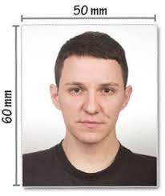

OZGECMIS
KISISEL BILGILER

Adi: Mehmet
Soyadi: Mutlu
Uyrugu: T.C
Dogum Tarihi: 01.01,1983
Dogum Yeri: Istanbul
Medeni Durumu: Evli
Telefon: 0545 232 19 23
E-Mail: mehmetmutlu@gmail.com
Surucu Belgesi: B
EGITIM
2004 ~ 2007 İstanbul Teknik Üniversitesi
2001 ~ 2004 İstanbul Teknik Üniversitesi
1999 ~ 2001 Yıldız Teknik Üniversitesi
1996 ~ 1999 Beşiktaş Devlet Lisesi
1992 ~ 1996 Özel Atanur Oğuz Deneme Lisesi
IS DENEYIMI
2002 yaz dönemi şantiye stajı
2003 yaz dönemi büro stajı
2004 Bitirme çalışması
2005 Ocak ~ 2006 Haziran – Probi İnşaat Proje Bilgi İşlem Merkezi A.Ş
2006 Haziran ~ 2007 Şubat – Emir İnşaat Mühendislik A.Ş
2007 Mayıs ~ 2007 Aralık
2008 Temmuz ~ 2009 Mayıs
PROJE, SEMPOZYUM ve SERTIFIKALAR
Mayıs 2009 - 4. İstanbul ve Deprem Sempozyumu ( İMO )
Kasım 2008 ~ Ocak 2009 Çelik Yapılar Kursu
Haziran 2008 - Yurdumuzdaki Depremlerin Yapı Müh.
Mayıs 2008 – Deprem Yönetmeliğinde Doğrusal Olmayan Yöntemler Semineri
Kasım 2007 – Zemin Mekaniği ve Temel Mühendisliği 1. Özel Konulu Sempozyumu
Ekim 2007 – 6. Ulusal Deprem Mühendisliği Konferansı
Haziran 2007 – Kompozit Döşemelerin Tasarımı Semineri
Nisan 2007 – Deprem İçin İtme Analizi Semineri
Aralık 2006 – Deprem Bölgelerinde Yapılacak Binalar Hakkında Yönetmelik İçin Meslek içi Eğitim Programı Semineri
Haziran 2006 – Yapısal Düzensizlikler Sonucu Binalarda Oluşan Deprem Hasarları Semineri
BILGISAYAR KULLANIMI
Word Exel Powerpoint Outlook
AutoCad
Matlab
Sap2000
YABANCI DIL BILGISI
İngilizce : Iyi derecede okuma, yazma ve konuşma
Almanca : Okuduğunu anlamada iyi derecede, yazma ve konuşmada ise orta derecede
Fransizca : Orta seviye
ILGI ALANLARI
Muzik
Kitap
Yuzme
Futbol